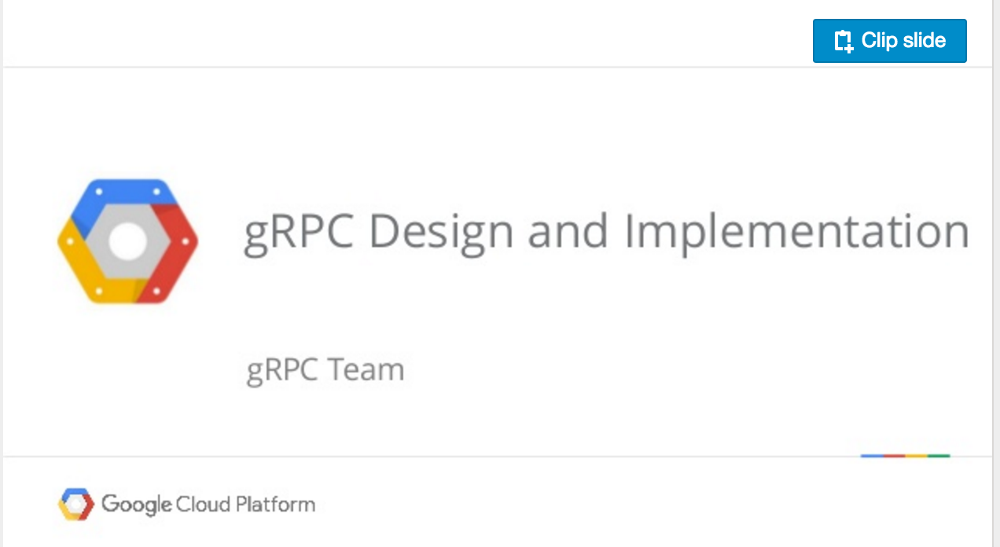
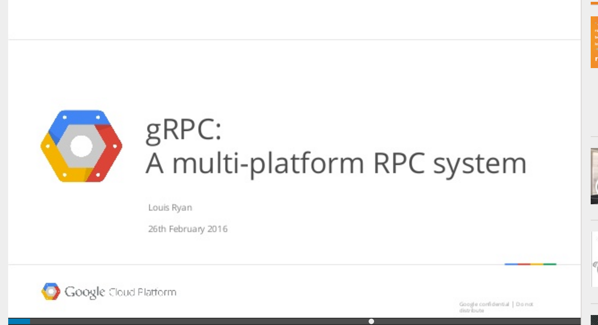
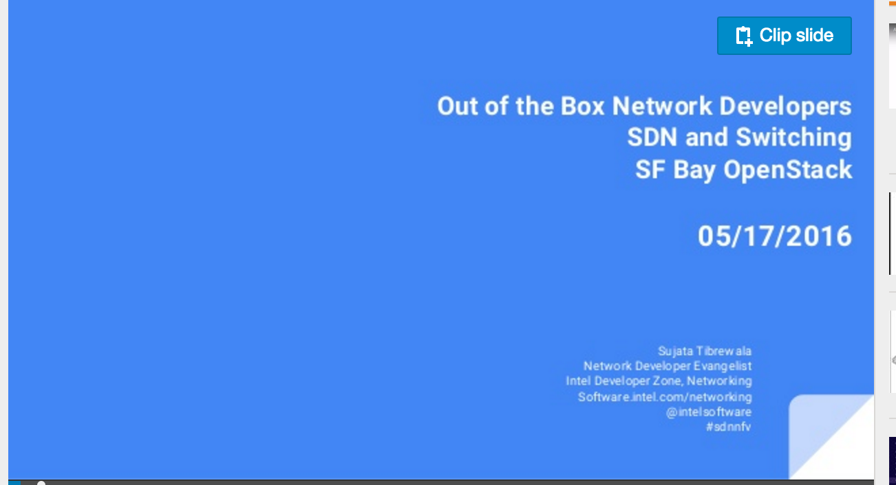

Presentations & Talks
gRPC has been talked about in many conferences and sessions. Here are a few interesting ones:

Building microservices with gRPC and Kubernetes (Video)

Building a scalable Python gRPC service using kubernetes, 2015

Real time IOT with containers and gRPC (Video)

gRPC Talk at Gotham Go 2015

gRPC Design and Implementation, Stanford Platforms Lab, March 2016

gRPC Overview: Talk at Slack, Feb 2016

Google and Intel speak on NFV and SFC Service Delivery (Presentation)

Building Microservices with gRPC and Kubernetes, 2016 (Video)